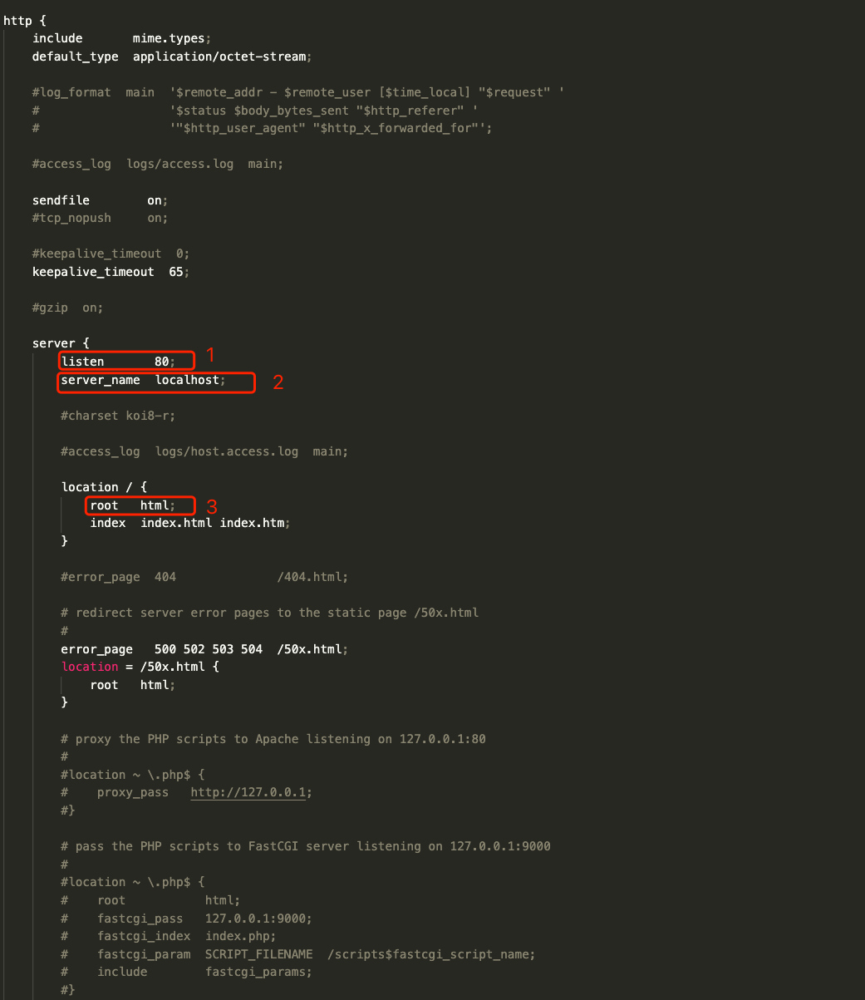
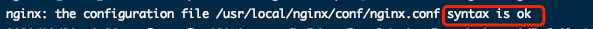

部署 Vue 项目 | nginx 的简单应用
Vue 项目前端开发完毕后有多种发布方式，本文简单介绍在 centos 环境下使用 nginx 部署的流程。
Vue项目打包
Vue 项目默认使用 npm run build 进行生产环境打包，打包后的文件会放在项目的 dist 目录下，将该 dist 目录上传至 centos 服务器中，记住此时的路径，后面 nginx 配置时会用到。
nginx 部署
nginx 安装
在 centos 服务器上安装 nginx 步骤
安装 gcc
gcc, GNU 编译器套件，编译语言包括 C、C++**、 **Objective-C、 Fortran、Java、Ada 和 Go。nginx 采用 C 编写，需要使用 gcc 进行编译。1
yum install -y gcc
安装 pcre、pcre-devel
prec 是一个 perl 库， 包括 perl 兼容的正则表达式库，nginx 的 http 模块需要使用 prel 解析正则表达式。1
yum install -y pcre pcre-devel
安装 zlib
zlib 库提供了多种解压缩方式， nginx 使用 zlib 对 http 包的内容进行 gzip。1
yum install -y zlib zlib-devel
安装 openssl
openssl 用来进行安装通信。1
2yum install -y opensll openssl-devel
下载解压 nginx
1
2wget http://nginx.org/download/nginx-1.19.2.tar.gz
tar -zxvf nginx-1.19.2.tar.gz注意：nginx 版本号自定
编译 nginx
1
2
3./configure
make
make install
以上步骤会在 /usr/local/nginx 路径安装 nginx。
nginx 配置
- 进入 nginx 配置文件目录
1
cd /usr/local/nginx/conf
- 修改配置文件显示如下：
1
vim nginx.conf

其中
(1) 处是网页访问的端口号，默认是80。
(2) server_name 是访问的地址，可以填服务器的 IP。
(3) 是网页所在的路径，Vue 项目即将 dist 目录上传到 centos 所在的路径，比如上传到 /home/dist 路径，配置为：1
2
3
4location / {
root: /home/dist;
index index.html index.htm;
} - 验证 nginx 配置键入以上两行代码后，页面如下显示即表示 nginx 配置无误。
1
2cd /usr/local/nginx/sbin
./nginx -t

- 进入 nginx 配置文件目录
- nginx 启动
- 进入 sbin 目录
1
2cd /usr/local/nginx/sbin
- 启动 nginx
1
./nginx
- nginx 重启命令
1
./nginx -s reload
- 进入 sbin 目录